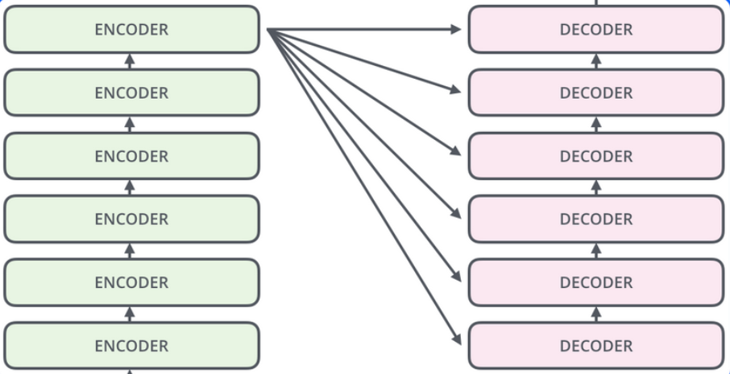
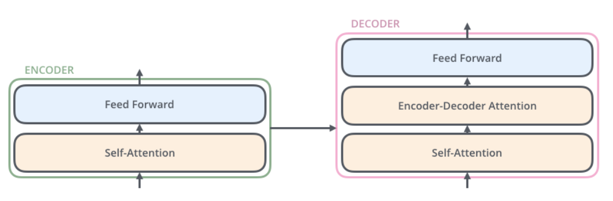
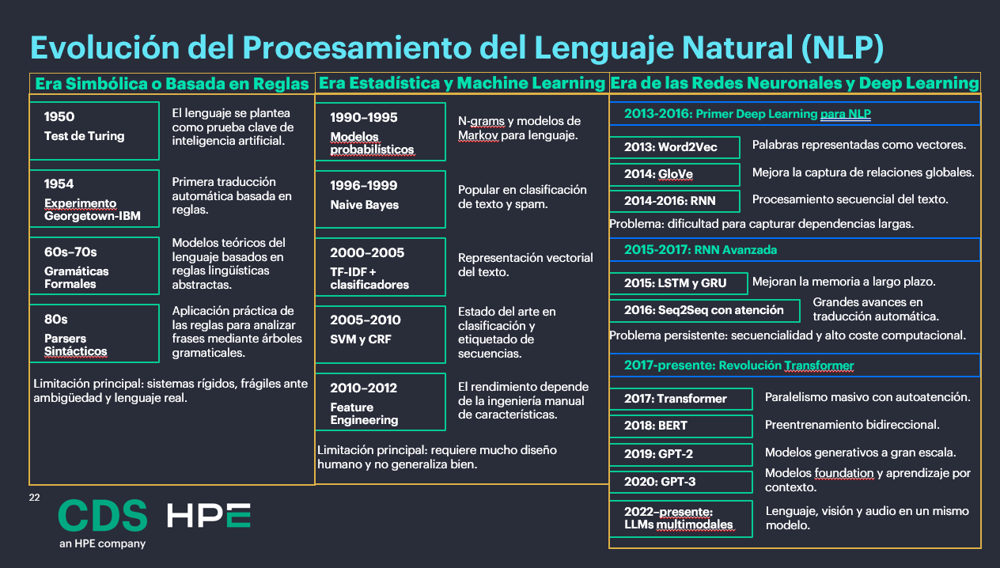
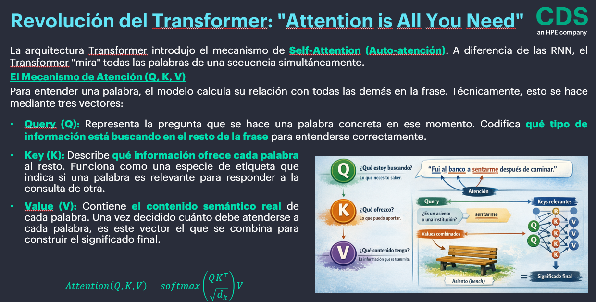
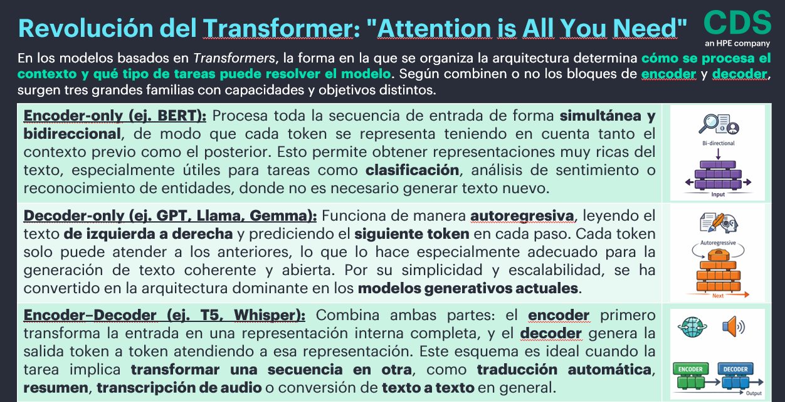
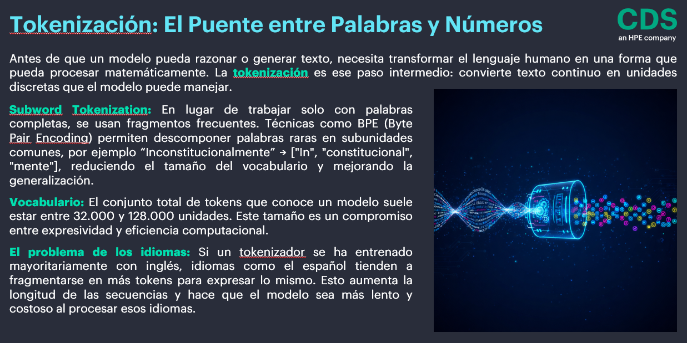
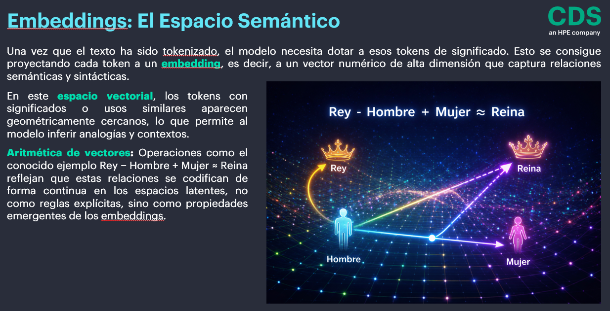
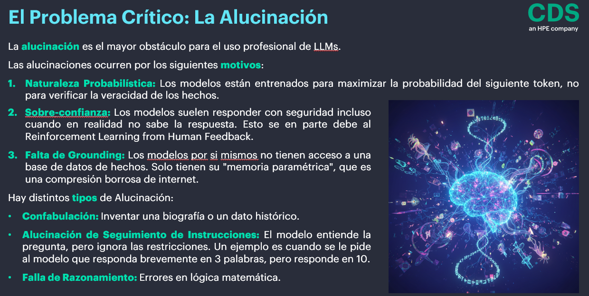
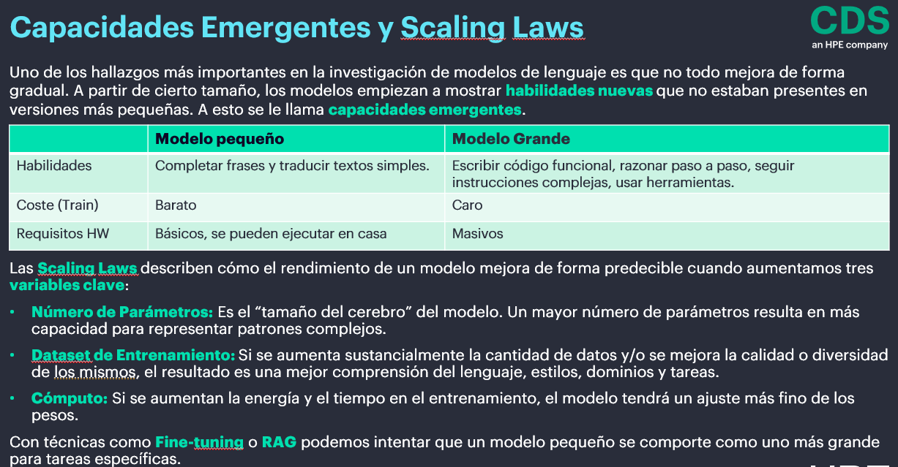
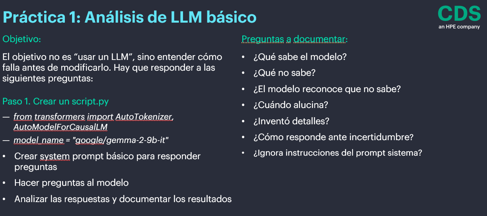

TRANSFORMERS¶
Es un tipo de arquitectura basada en redes neuronales que procesan secuencias de palabras y tienen memoria a largo plazo, es decir que logran analizar secuencias muy extensas usando un mecanismo que se llama atención. Además, procesan toda la secuencia en paralelo (las redes recurrentes lo hacen en serie).
Las redes transformers están descritas en el artículo del 2017 llamado "Attention is All You Need".
En lugar de tratar todas las palabras de manera uniforme, los mecanismos de atención asignen pesos diferentes a cada palabra de entrada, de forma que las palabras relevantes acaben obteniendo más peso.
El Mecanismo de Atención cambia radicalmente, en lugar de leer de izquierda a derecha, el Transformer mira toda la frase a la vez.
El modelo decide qué otras palabras de la frase son importantes para entender la palabra actual.
En "El banco central está cerrado porque su edificio es viejo", el modelo sabe que "su" se refiere a "banco" gracias a la contextualización que aporta esta nueva arquitectura.
Un transformer es un tipo de red neuronal que se basa exclusivamente en mecanismos de atención para procesar datos de secuencia como textos, imágenes o series temporales.
Al procesar todo a la vez, se puede usar la potencia de las GPUs para entrenar con volúmenes de datos masivos. Esto consume mucha potencia y recursos, pero permite un ahorro de tiempo exponencial.

Realmente el ENCODERS es un conjunto de encoders, uno encima de otro. Lo mismo sucede con el DECODERS.

La estructura de los encoders y los decoders es la siguiente:

Introducción a los transformers¶
Los transformers forman parte del pre-entrenamiento y potencian las técnicas que ya conocemos.
" Attention Is All You Need "
La arquitectura de los transformers da importancia a las relaciones entre palabras que no están cerca para generar un texto preciso y coherente.
Los componentes de la arquitectura transformers es la siguiente:
- Preprocesamiento.
- Codificación posicional (Posicional Encoding).
- Codificadores (Encoders).
- Decodificadores (Decoders).
Pre-entrenamiento y Transfer Learning (2018)¶
A partir de 2018, la tendencia cambió a entrenar modelos gigantes de forma genérica y luego ajustarlos para tareas específicas.
BERT (Google): Especialista en entender (clasificación, extracción).
GPT (OpenAI): Especialista en generar (completar texto).
Aquí descubrimos que, al escalar los modelos a miles de millones de parámetros, empezaban a aparecer capacidades emergentes como razonamiento lógico, capacidad de programar y traducción sin haber sido entrenados específicamente para ello.
Hugging Face¶
La biblioteca "Transformers" de Hugging Face ofrece una variedad de modelos de lenguaje preentrenados basados en la arquitectura transformer. Algunos de los modelos más populares incluyen BERT, DistilBERT y RoBERTa.
BERT, que significa "Bidirectional Encoder Representations from Transformers", fue uno de los primeros modelos en aplicar la arquitectura transformer a tareas de PLN. Ofrece variantes como BERT base y BERT large, que difieren en el tamaño y la capacidad de procesamiento.
DistilBERT es una versión más liviana de BERT que conserva gran parte de su rendimiento y eficacia, pero con menos parámetros y un menor tiempo de entrenamiento. Esta versión es perfecta para aplicaciones donde se requiere una buena relación entre eficiencia y precisión.
RoBERTa, una versión mejorada de BERT, utiliza técnicas de entrenamiento adicionales para mejorar aún más el rendimiento en tareas de PLN. Al igual que BERT, también está disponible en versiones base y large.
Estos modelos de lenguaje ofrecen beneficios significativos para una variedad de tareas de PLN, como la clasificación de secuencias, la generación de texto y el análisis de sentimientos.
La Era Actual - LLMs, Instrucciones y Alineación¶
Los modelos actuales (como Gemma-2 que usaremos en este curso) no solo predicen la siguiente palabra; han sido "alineados" mediante SFT (Supervised Fine-Tuning) y RLHF (Reinforcement Learning from Human Feedback) para actuar como asistentes.
Hoy en día no nos conformamos con que el modelo "hable". Exigimos:
-
Fiabilidad: Que no invente (evitar alucinaciones).
-
Actualización: Que consulte fuentes externas (RAG).
-
Acción: Que ejecute herramientas (Tools/Function Calling).
-
Autonomía: Que razone pasos complejos (Agentes).
¿Es la IA una herramienta o un enemigo? ¿Cómo está impactanto la IA en la vida de las personas?
Repaso de transformers¶
- La arquitectura de Transformers utiliza Encoders y Decoders.
- El Transformer permite entrenar en paralelo y aprovechar la GPU.
- Utiliza un mecanismo de atención que cruza en memoria “todos contra todos los tokens” y obtiene un score. Los modelos anteriores como LSTM no podían memorizar textos largos ni correr en paralelo.
- El mecanismo de atención puede ser de Self Attention en el Encoder, Cross Attention ó Masked Attention en el Decoder.
- Se utiliza El Input pero también la Salida (el Output del dataset) para entrenar al modelo.
NLP y Transformers¶







